naia-platform · v0
Document de wireframe — 2025
Archive. Tout premier document de wireframe de Naia (2025), antérieur aux maquettes interactives. Ce sont des captures statiques (pas de HTML interactif). Conservé comme référence historique ; la version courante est naia-platform/v6.2 .
← Toutes les maquettes
Accueil · vue jour
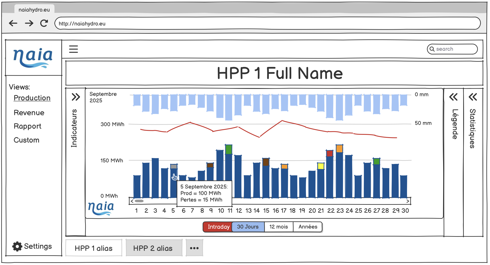
Accueil · vue jour Accueil · vue intraday
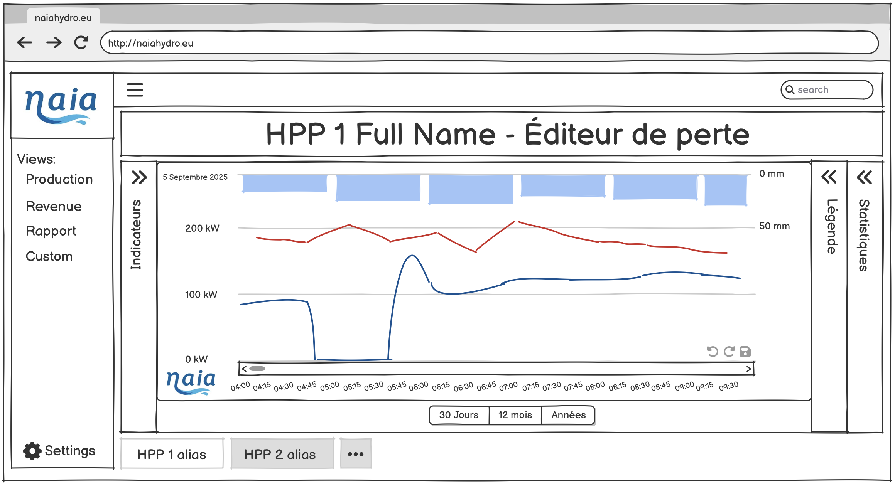
Accueil · vue intraday 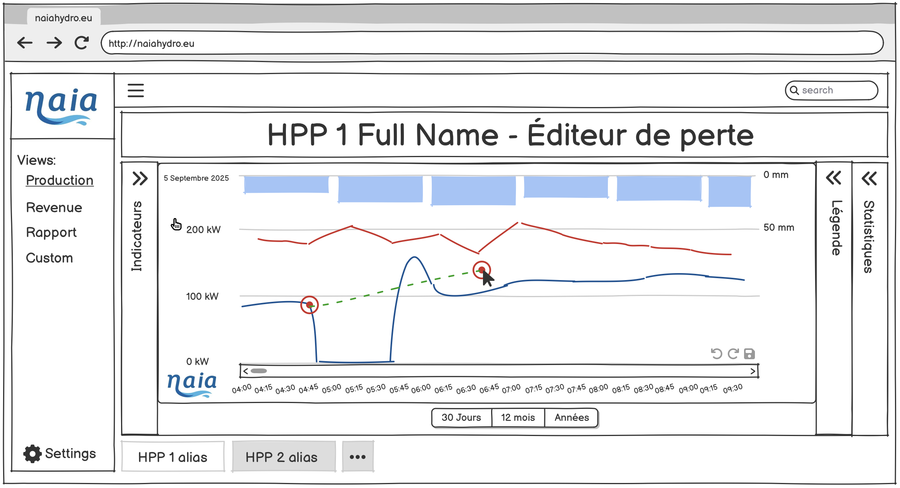
Intraday · courbe 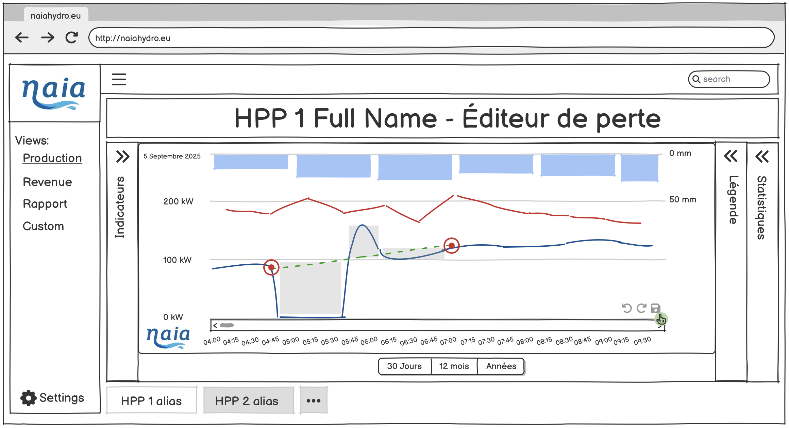
Intraday · courbe (enregistrement) 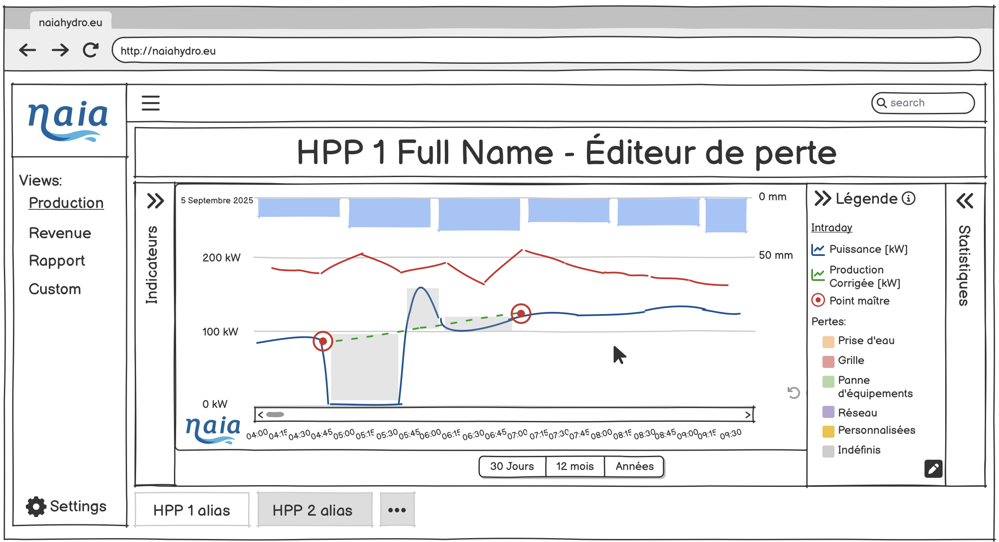
Intraday · légende 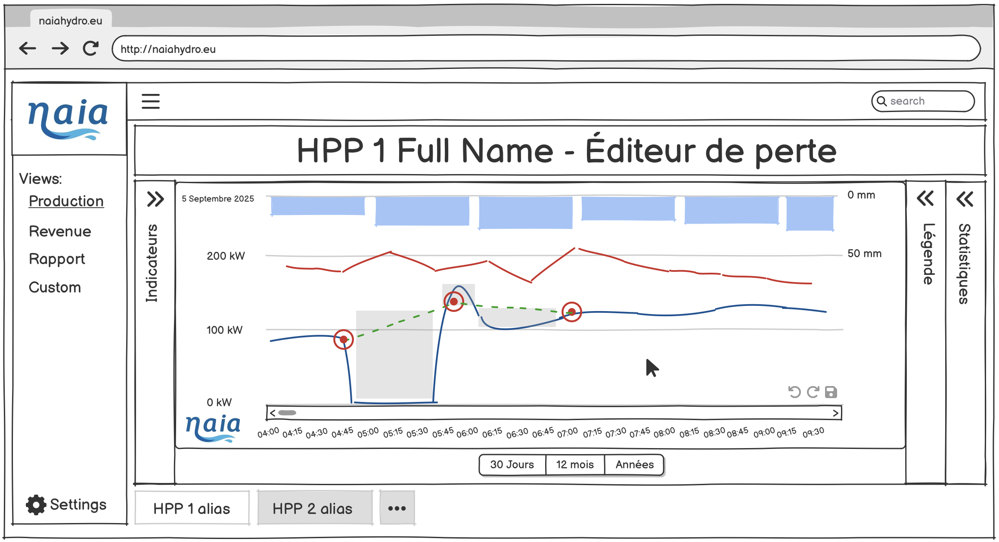
Intraday · polyligne 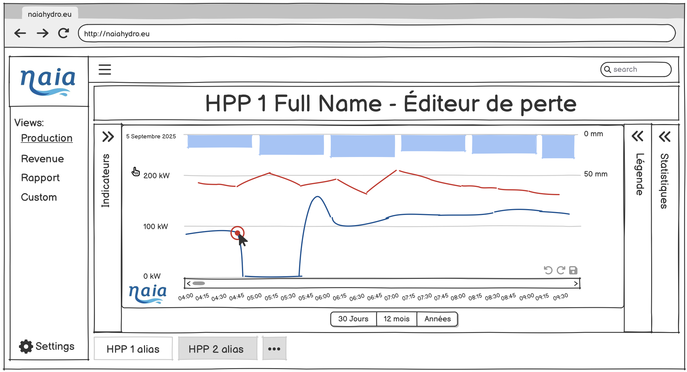
Intraday · point (1) 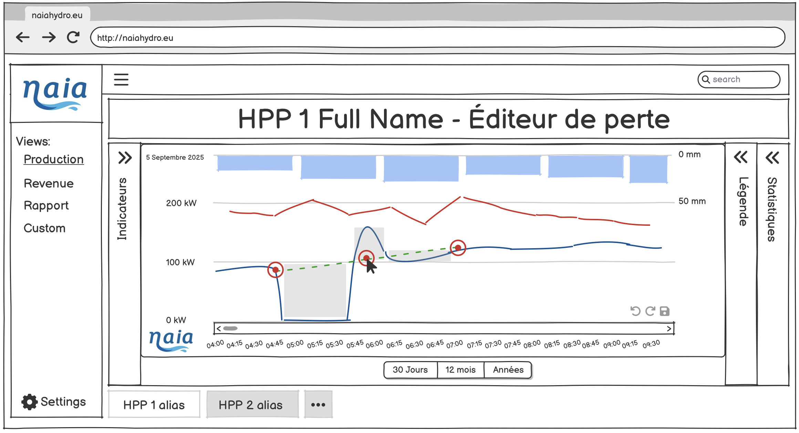
Intraday · point (3) 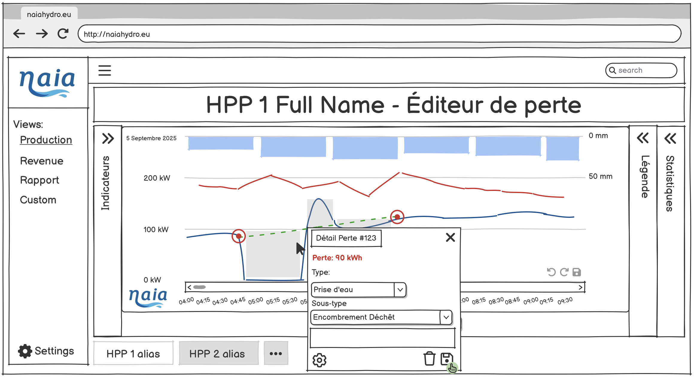
Intraday · détails des pertes 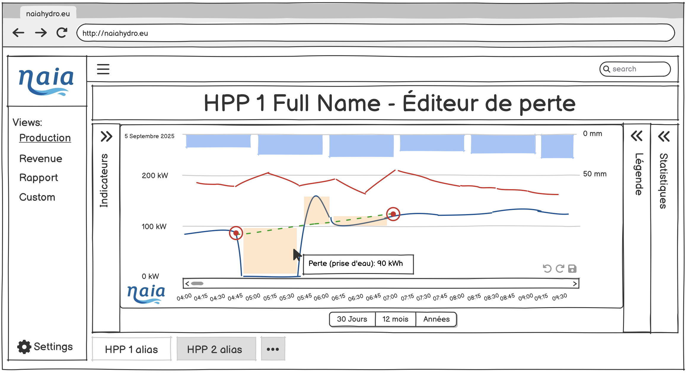
Intraday · interprétation des pertes 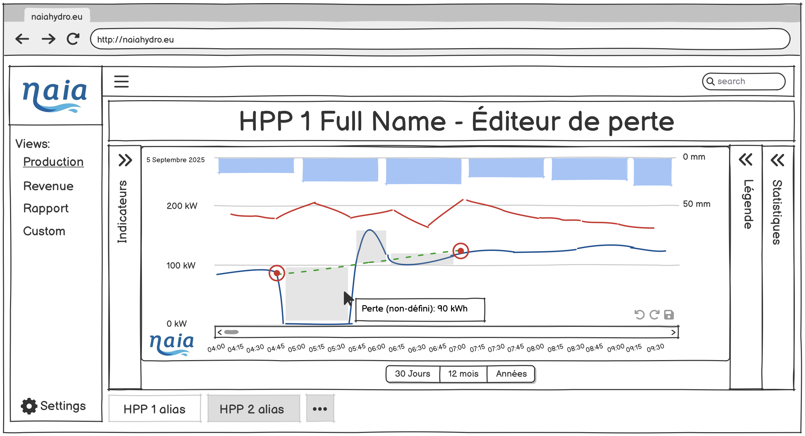
Intraday · perte non définie Accueil · vue mois
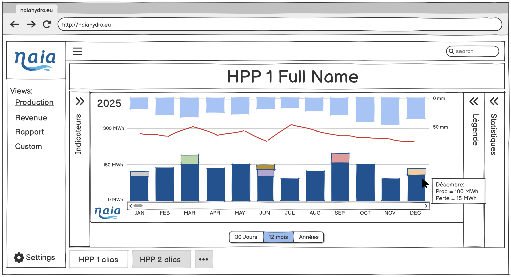
Accueil · vue mois 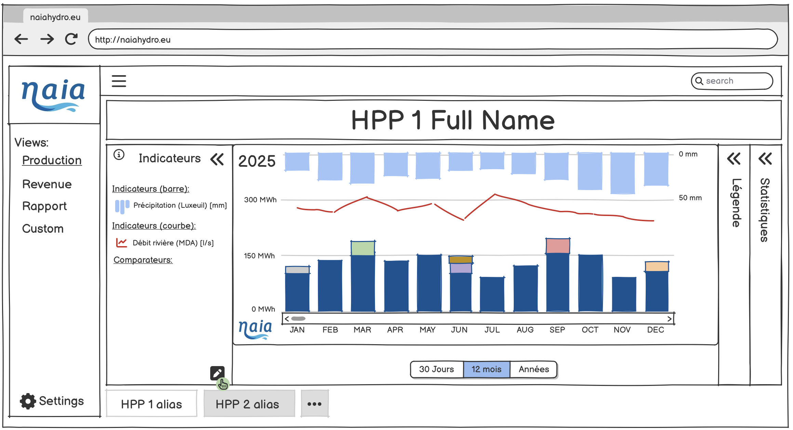
Mois · indicateur 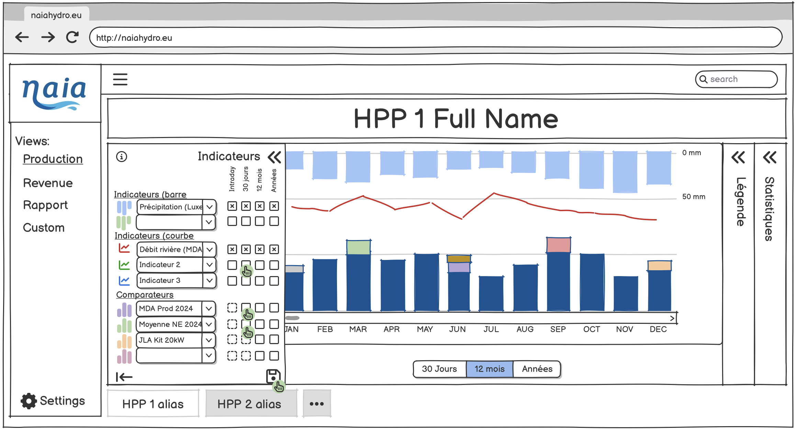
Mois · indicateur (modification) 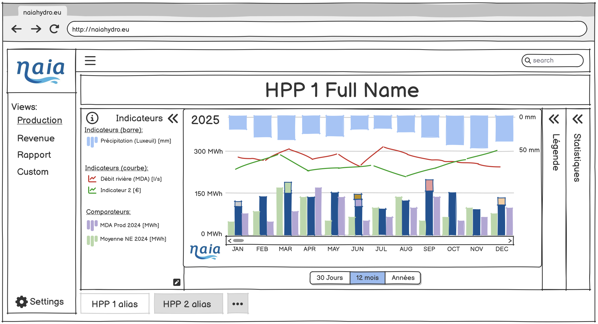
Mois · indicateur (après modification) 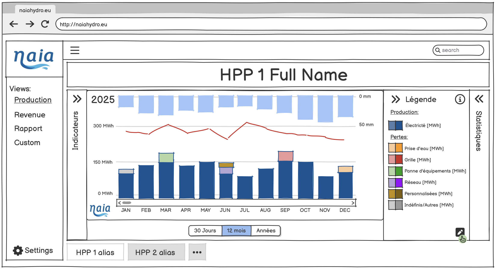
Mois · légende 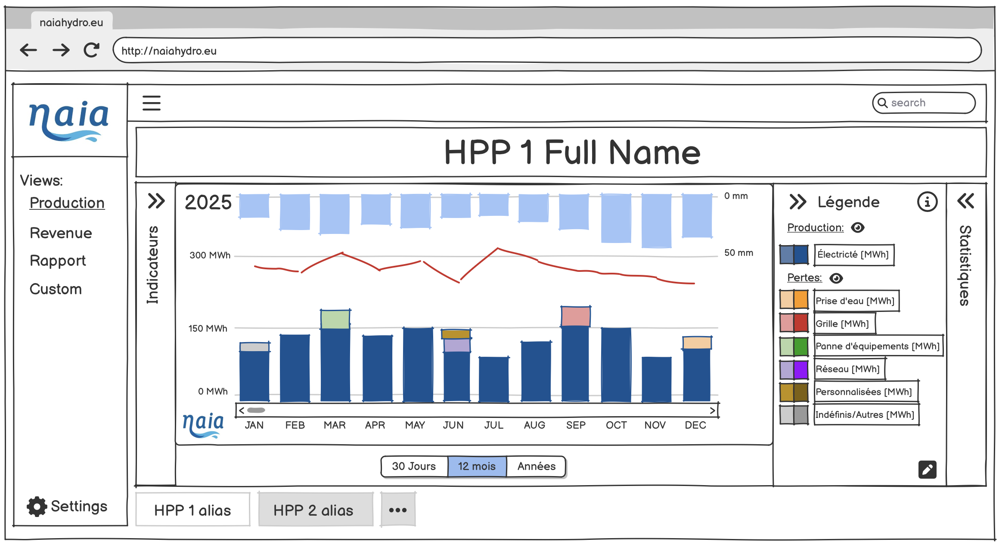
Mois · légende (modification) Statistiques
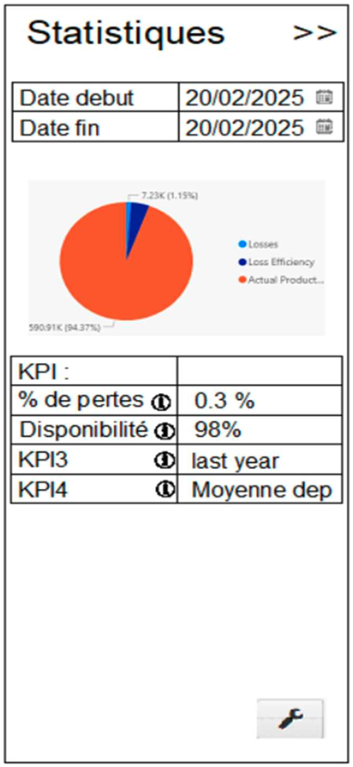
Statistiques